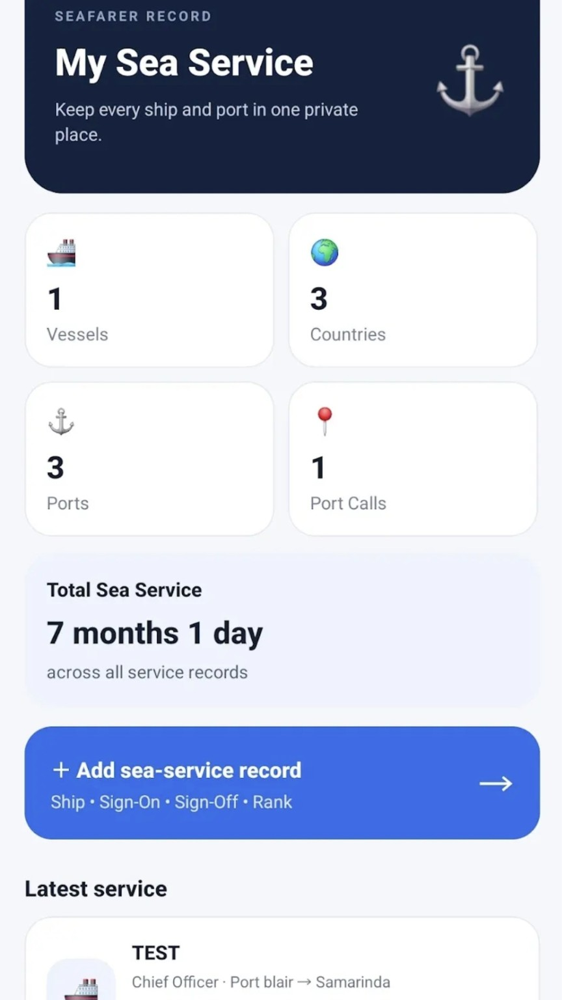
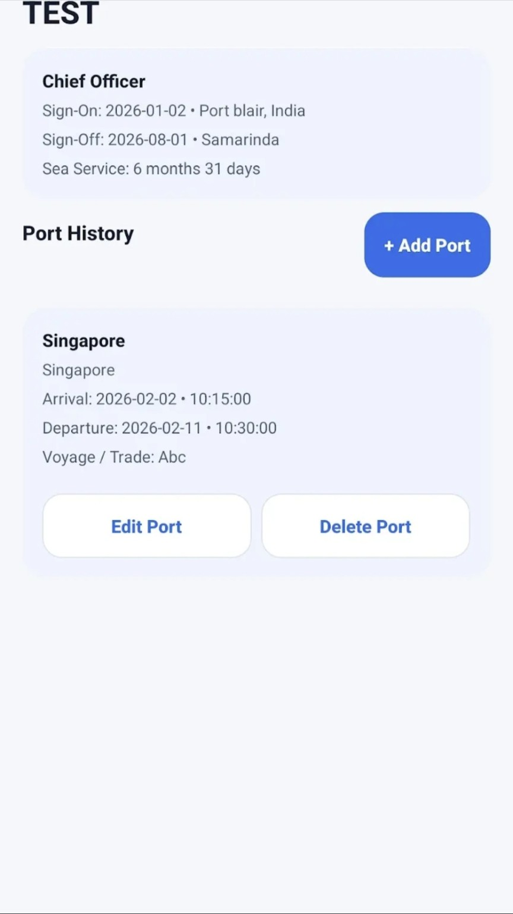
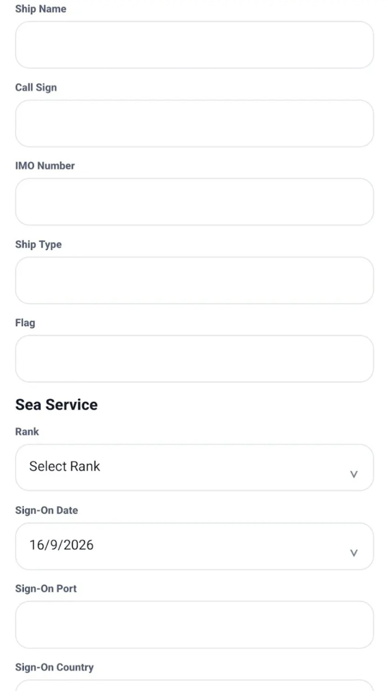
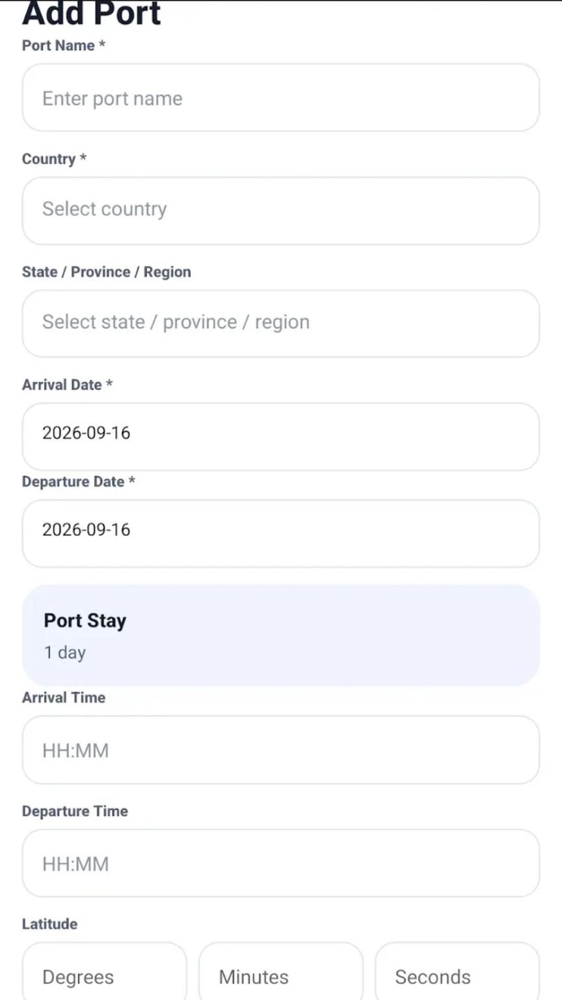
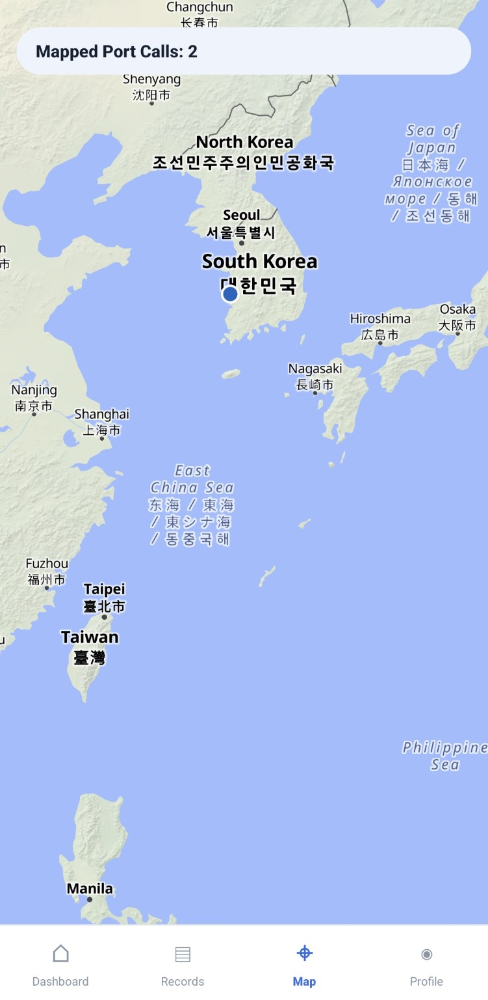
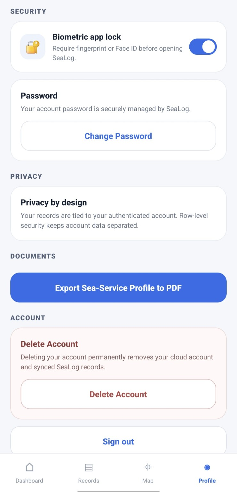

⚓
Sea-service records
Record vessel details, rank, sign-on and sign-off information and keep your service history together.
SEALOG MARINE
Keep your vessels, sea-service records and port calls organised in one simple place — built around the everyday needs of seafarers.
Google Play link will be activated when the V15 release is published.

WHAT SEALOG DOES
SeaLog focuses on the records seafarers actually need to maintain from vessel to vessel and port to port.
Record vessel details, rank, sign-on and sign-off information and keep your service history together.
Keep a clear record of the vessels you have served on, including key vessel information.
Record arrival, departure, port details, voyage information and coordinates for your port history.
See mapped port calls visually and keep your maritime history connected to the places you have visited.
Export your sea-service profile to a structured PDF for your own records and future use.
Account security, biometric app lock and privacy-focused record separation are built into the app experience.
INSIDE SEALOG
These are real SeaLog V15 screens — the website does not use mock-ups.





PRIVACY & SECURITY
SeaLog is designed with privacy in mind. Account data is separated by authenticated user access, while the app provides security controls such as biometric app lock and password management.
NEW TO SEALOG?
Learn how to create your account, build your profile, add vessels and Port Calls, check your sea-service records, use the map and export your Sea-Service Profile PDF.
PRIVACY BY DESIGN
SeaLog is designed to keep your personal sea-service information protected and separate from other users.
SeaLog does not use your sea-service records for advertising.
The app is designed without third-party advertising.
Your records are protected by authenticated access and row-level security controls.
For the complete details of how information is handled, please read the SeaLog Privacy Policy.
WHAT'S NEXT
Cloud backup, restore and multi-device capabilities are planned for a future SeaLog release.
NEED HELP?
Have a question about SeaLog or need help with your account? Contact the SeaLog Marine support team.